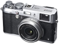

器材库 > 不可换镜头数码相机 > FinePix X100S

规格总览
发布日期
2013-01-08
厂家推荐价格
130,000.00 （日元）
影像规格
影像传感器
X-Trans CMOS
影像传感器尺寸
23.6x 15.8mm
有效像素
1630万
影像处理器
EXR 处理器 II
静态图像尺寸
L : (3:2) 4896 x 3264 / (16:9) 4896 x 2760 / (1:1) 3264 x 3264；M : (3:2) 3456 x 2304 / (16:9) 3456 x 1944 / (1:1) 2304 x 2304；S : (3:2) 2496 x 1664 / (16:9) 2496 x 1408 / (1:1) 1664 x 1664
静态图像格式
JPEG, RAW, RAW+JPEG
画幅比
3:2, 16:9, 1:1
短片尺寸
1920 x 1080（60fps/30fps）
短片格式
MPEG4-AVC/H.264
短片音效
线型PCM/立体声
镜头和对焦
镜头结构
8片/6组
非球面镜片
1片
焦距
23mm
等效35mm画幅焦距
35mm
最大光圈
f/2.0-f/16
最近对焦距离
10cm
自动对焦系统
混合自动对焦系统
对焦模式
单幅 AF / 连续 AF / MF
手动对焦
支持
曝光控制
测光模式
中央重点测光, 多分区评价测光, 点测光
曝光模式
P（程序自动曝光）, A（光圈优先自动曝光）, S（快门速度优先自动曝光）, M（手动测光曝光）
快门速度
（P 模式）1/4 秒至 1/4000秒，（所有其它模式）30 秒至 1/4000*秒，
曝光补偿
±2EV以1/3EVEV级调整
ISO感光度
200, 400, 800, 1600, 3200, 6400, 可扩展至100-25600
白平衡
白炽灯, 色温调节, 阴天, 自定义, 晴天, 水下, 荧光灯（冷白色）, 荧光灯（日光）, 荧光灯（暖白色）
自拍
10秒, 2秒
连拍
6张/秒
闪光灯
内置闪光灯
固定
闪光模式
自动
闪光涵盖范围
约 50cm 至 9m
取景规格
取景器尺寸
0.47英寸
取景器像素
236万
LCD类型
TFT LCD
LCD尺寸
2.8英寸
LCD像素
46万
视野率
100%
文件输入/输出
存储卡
SD/SDHC, SDXC
数据接口
USB2.0
视频/音频接口
HDMI Mini 输出
电源
电池
NP-95 锂离子电池
续航能力
330幅
外观
颜色
银/黑色
尺寸
126.5 x 74.4 x 53.9mm
重量
405g
其它
工作温度
0 - 40℃
工作湿度
10 - 80%
wingszero2014-06-13 01:224.38 分
操作性 4.00功能性 4.00美观性 5.00趣味性 4.50耐用性 4.00性价比 4.50解像力 4.50色彩还原 4.50
dysunnyclub2014-05-03 12:204.5 分
操作性 4.50功能性 4.50美观性 4.50趣味性 4.50耐用性 4.50性价比 4.50解像力 4.50色彩还原 4.50
zpjzpj2013-08-17 23:214.75 分
操作性 5.00功能性 5.00美观性 5.00趣味性 5.00耐用性 4.50性价比 3.50解像力 5.00色彩还原 5.00
WellGTR342013-04-08 23:484.63 分
操作性 4.50功能性 5.00美观性 5.00趣味性 5.00耐用性 4.50性价比 3.50解像力 4.50色彩还原 5.00
产品图 / 样片
富士 FinePix X100S
评测 / 相关文章
- 详细内容 （存档）
- 由内而外的变革 富士X100S详细评测 （存档）
- ［试用］X100s随时随地随心随性拍 （存档）
- ［试用］走走拍拍，X100s生活 （存档）
- ［试用］我的富士“X”之路 （存档）
- ［资讯］屡获殊荣的富士X100S发布全黑版设计 （存档）
- ［试用］从X100到X10到X-PRO1到X-E1到X100S （存档）
- ［资讯］EISA 2013-2014年度影音设备大奖 （存档）
- ［试用］当美景遇到文艺小清新 富士X100S大马游记 （存档）
- ［试用］富士X100s开箱试机 （存档）
- ［资讯］大底进入“微”时代——2013年P&E观礼 （存档）
- ［试用］《海上杂记》富士篇 X100 （存档）
相关文章
- ［试用］一个器材党折腾过的富士相机 （存档）
- ［试用］X100s随时随地随心随性拍 （存档）
- ［试用］走走拍拍，X100s生活 （存档）
- ［试用］我的富士“X”之路 （存档）
- ［资讯］屡获殊荣的富士X100S发布全黑版设计 （存档）
- ［试用］从X100到X10到X-PRO1到X-E1到X100S （存档）
- ［资讯］EISA 2013-2014年度影音设备大奖 （存档）
- ［试用］当美景遇到文艺小清新 富士X100S大马游记 （存档）
- ［试用］富士X100s开箱试机 （存档）
- ［资讯］大底进入“微”时代——2013年P&E观礼 （存档）
- ［试用］《海上杂记》富士篇 X100 （存档）
- ［试用］带着X100S去流浪 （原站已下线）